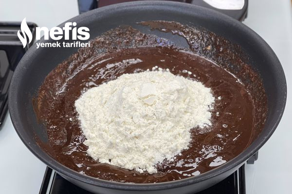
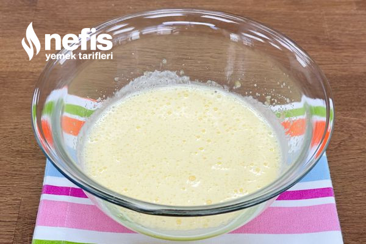
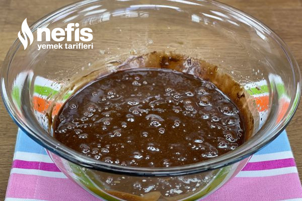
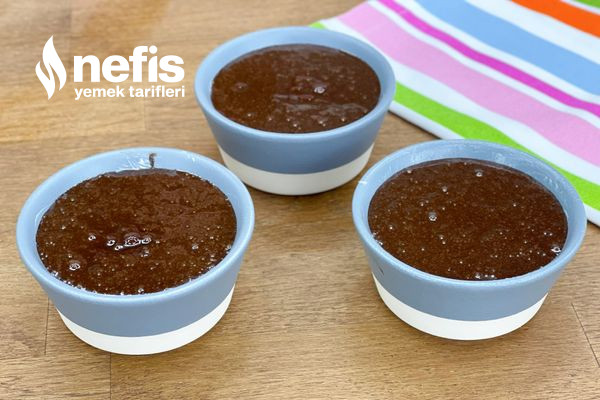
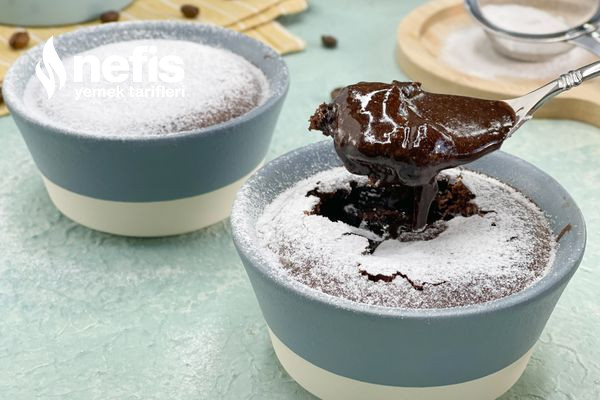

|  | Tereyağını teflon teflon tavada kısık ateşte erittikten sonra çikolatayı ekleyin ve karıştırarak eritin. Eridikten sonra ocağı kapatarak unu ilave edin ve iyice karıştırın. |
|  | Ayrı bir kapta yumurta ve şekeri karışım beyazlayana kadar çırpın. Şeker tadının ön plana çıkması için tuzu ekleyip çırpın. |
|  | Çikolatalı harcı ilave ederek mikserle tekrar çırpın. Hamurumuz hazır. |
|  | Sufle kaplarınızı ya da ısıya dayanıklı küçük kaplarınız varsa içlerini yağlayarak hamurdan eşit şekilde hepsine paylaştırın. bu ölçülerle ben 3 kap sufle elde ettim ancak sizin kullandığınız kalıpların büyüklüğüne göre bu sayı değişecektir. |
|  | Daha önceden fansız çalıştırdığınız ve ısıttığınız fırında 7-8 dakika da sufleniz hazır. Eğer kalıplarınız büyükse 8 küçükse 7 dakika pişirmenizi tavsiye ederim. |